Warm
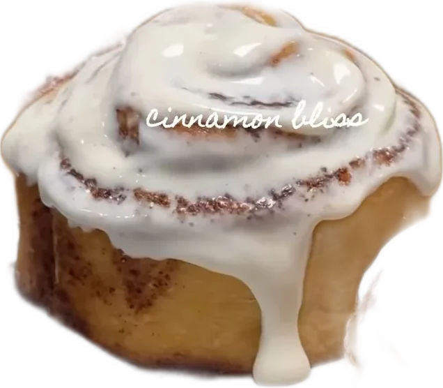
Cinnamon BlissCream-cheese glaze, toasted walnutAdd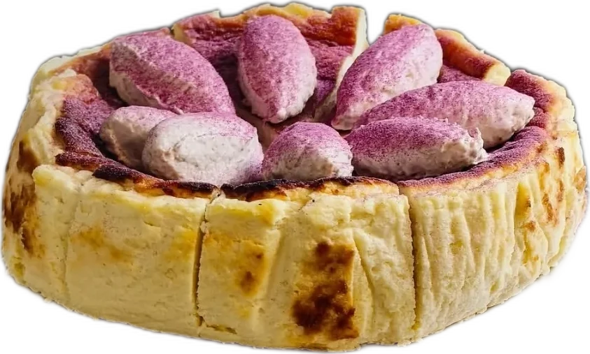

Cinnamon BlissCream-cheese glaze, toasted walnutAdd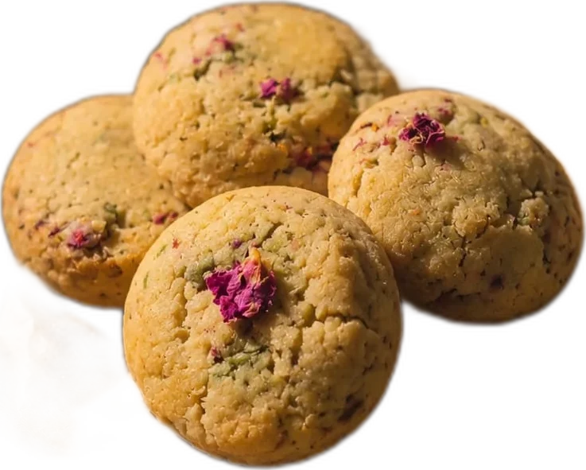
The DamasceneRose, pistachio, white chocolateAdd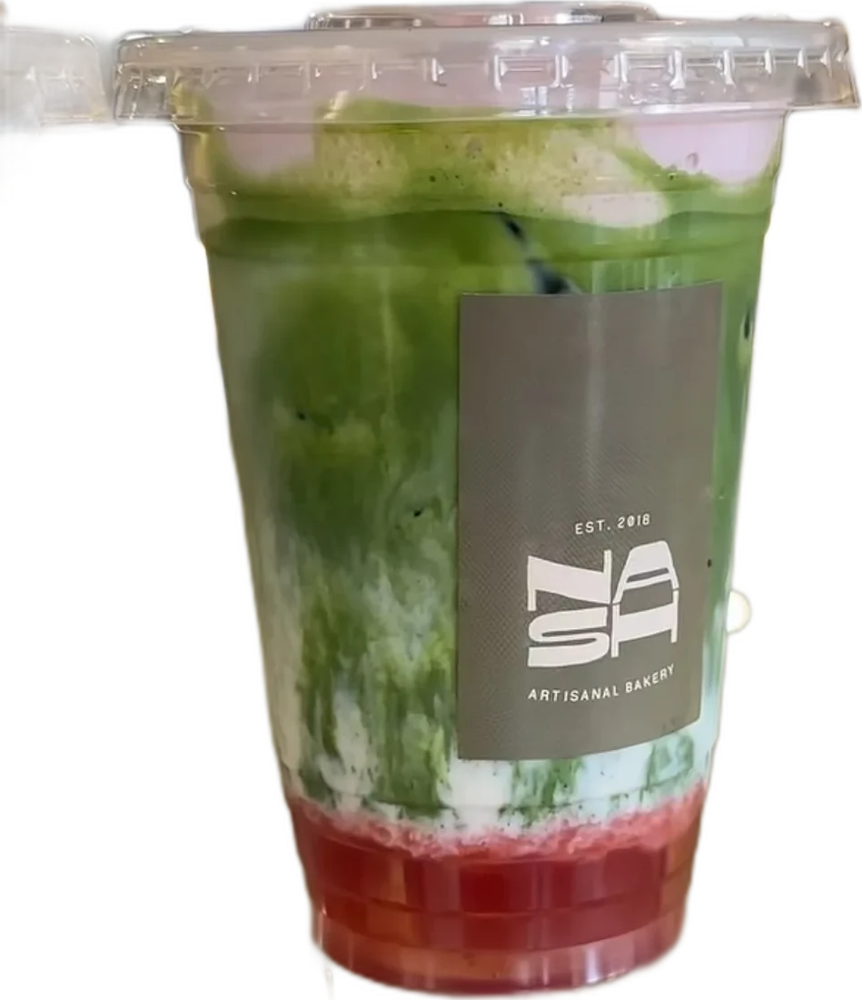
Strawberry Foam MatchaLayered, silky, seasonalAdd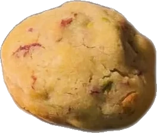
Rose & PistachioSyria, in one biteAdd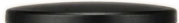
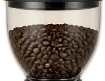
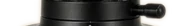
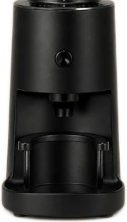
Every shot starts as whole beans. Ground the moment you order, dosed by hand, pulled with care.
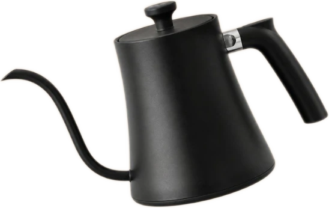
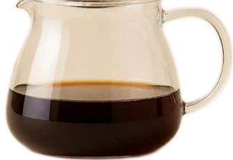
Bold, round and unmistakably ours, finished with a thick golden crema. The quiet heart of NASH, and an espresso people cross the city for.
See the coffeePillowy roll, swathed in cream cheese glaze and finished with toasted walnuts. Served warm, right up to midnight.
Order now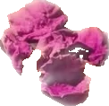
It started with a craving our founder, Dania Ayoubi, couldn't satisfy anywhere. So she tested in her own kitchen, batch by batch, until Syria had its own place on the menu.
Layered iced drinks, silky lattes and a seasonal creation that changes with the mood. Poured slow, so the layers hold.
See the drinks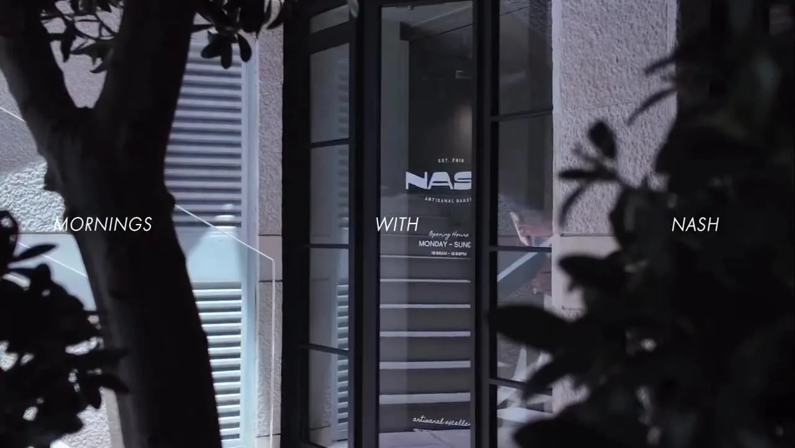
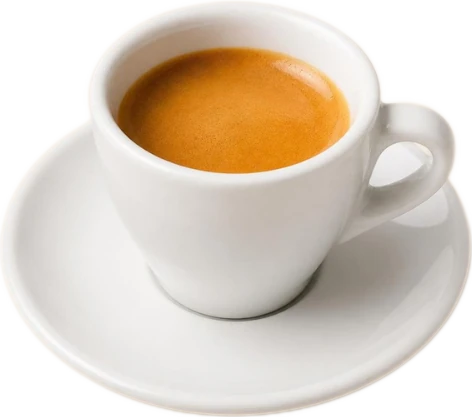
A late-night craving or a quiet moment to yourself: fresh bakes, warm rolls and a proper espresso until the clock strikes twelve. Damascus, Syria.
NASH, at your door